1 Importing, Processing, and Visualising Data
1.1 Organizing Spectral Data
Let’s begin by loading the package.
1.1.1 Spectral Dataset Description
The raw spectral data used in this example are available from the package repository on GitHub, located here. You can download and extract it to follow the vignette exactly. Alternatively, the data are included as an RData file as part of the package installation, and so can be loaded directly (see below).
The data consist of reflectance spectra, obtained using Avantes equipment and software, from seven bird species: Northern Cardinal Cardinalis cardinalis, Wattled Jacana Jacana jacana, Baltimore Oriole Icterus galbula, Peach-fronted Parakeet Aratinga aurea, American Robin Turdus migratorius, and Sayaca Tanager Thraupis sayaca. Several individuals were measured (sample size varies by species), and 3 spectra were collected from each individual. However, the number of individuals measured per species is uneven and the data have additional peculiarities that should emphasize the flexibility pavo offers, as we’ll see below.
In addition, pavo includes three datasets that can be called with the data() function. data(teal), data(sicalis), and data(flowers) will all be used in this vignette. See the help files for each dataset for more information; via ?teal, ?sicalis, and ?flowers.
1.1.2 Importing spectra
The first thing we need to do is import spectral data into R using the function getspec(). It’s worth noting that getspec() is simply a wrapper for lr_get_spec() from the package lightr, which is a more specialised and feature-rich package for the import of spectral data and metadata (Gruson et al. 2019). Since the example spectra were obtained using Avantes software, we will need to specify that the files have the .ttt extension. Further, the data is organized in subdirectories for each species. getspec() will search through subdirectories recursively, and may include the names of the subdirectories in the spectra name if desired. getspec() also uses parallel processing thanks to the future package. You can check the documentation (?future::plan()) for more details but an easy way to set up parallel processing in most cases is to use the plan("multiprocess") command. A final issue with the data is that it was collected using a computer with international numbering input, which means it uses commas instead of periods as a decimal separator. We can specify that in the function call.
If, for example, the raw spectral files were downloaded and placed in a directory called /pavo/data_external/vignette, you might execute the following command and see this output:
specs <- getspec("~/pavo/data_external/vignette",
ext = "ttt",
decimal = ",",
subdir = TRUE,
subdir.names = FALSE)
# 213 files found; importing spectra
# |================================================================================| 100%, ETA 00:00For convenience, however, we’ve included the spectra as an RData file in the package installation, and so will simply load it directly.
specs <- readRDS(system.file("extdata/specsdata.rds",
package = "pavo"))And we can inspect the resulting object:
# The data set has 213 spectra,
# from 300 to 700 nm, plus a 'wl' column
specs[1:10, 1:4] wl cardinal.0001 cardinal.0002 cardinal.0003
1 300 5.7453 8.0612 8.0723
2 301 6.0181 8.3926 8.8669
3 302 5.9820 8.8280 9.0680
4 303 6.2916 8.7621 8.7877
5 304 6.6277 8.6819 9.3450
6 305 6.3347 9.6016 9.4834
7 306 6.3189 9.5712 9.3533
8 307 6.7951 9.4650 9.9492
9 308 7.0758 9.4677 9.8587
10 309 7.2126 10.6172 10.5396dim(specs) [1] 401 214When pavo imports spectra, it creates an object of class rspec, which inherits attributes from the data.frame class:
is.rspec(specs)[1] TRUEIf you already have multiple spectra in a single data frame that you’d like to use with pavo functions, you can use the command as.rspec() to convert it to an rspec object. The function will attempt to identify the wavelength variable or you can specify the column containing wavelengths with the whichwl argument. The default way that as.rspec() handles reflectance data is to interpolate the data in 1-nm bins, as is commonly done for spectral analyses. However, this can be turned off by using: interp = FALSE. As an example, we will create some fake reflectance data (n.b. we could use simulate_spec(), but the results would already be an rspec object), name the column containing wavelengths (in 0.5-nm bins) wavelength rather than wl (required for pavo functions to work) and also put the column containing wavelengths third rather than first.
# Create some fake reflectance data with
# wavelength column arbitrarily titled
# and not first in the data frame:
fakedat <- data.frame(
refl1 = rnorm(n = 801),
refl2 = rnorm(n = 801),
wavelength = seq(300, 700, by = .5)
)
head(fakedat) refl1 refl2 wavelength
1 -0.032893386 0.5059612 300.0
2 -0.478552738 -1.1526035 300.5
3 -0.190687886 -1.0708952 301.0
4 -0.008977959 -1.9871907 301.5
5 -0.443133039 -0.3910143 302.0
6 0.032110206 -0.5403221 302.5is.rspec(fakedat)[1] FALSEfakedat.new <- as.rspec(fakedat)wavelengths found in column 3The spectral data contain 443 negative value(s),
which may produce unexpected results if used in models.
Consider using procspec() to correct them.is.rspec(fakedat.new)[1] TRUEhead(fakedat.new) wl refl1 refl2
1 300 -0.03289339 0.50596119
2 301 -0.19068789 -1.07089518
3 302 -0.44313304 -0.39101435
4 303 -0.52064707 0.84403232
5 304 1.42813472 0.07150436
6 305 -0.19044804 -0.84504226As can be seen, as.rspec() renames the column containing wavelengths, sets it as the first column, interpolates the data in 1-nm bins and converts the data to an rspec object. Note that the same output is returned with specifying whichwl = 3:
The spectral data contain 443 negative value(s),
which may produce unexpected results if used in models.
Consider using procspec() to correct them. wl refl1 refl2
1 300 -0.03289339 0.50596119
2 301 -0.19068789 -1.07089518
3 302 -0.44313304 -0.39101435
4 303 -0.52064707 0.84403232
5 304 1.42813472 0.07150436
6 305 -0.19044804 -0.84504226Finally, the lim argument allows you to specify the range of wavelengths contained in the input dataset. This is useful either in the case that the dataset doesn’t contain this information (and hence you cannot specify the column with whichwl or automatically find the column with as.rspec()). Additionally, it may be useful to focus on a subset of wavelengths. In our example, the wavelengths ranged from 300 to 700 nm, however you could also specify a restricted range of wavelengths with lim:
wavelengths found in column 3The spectral data contain 231 negative value(s),
which may produce unexpected results if used in models.
Consider using procspec() to correct them.plot(refl1 ~ wl, type = "l", data = fakedat.new2)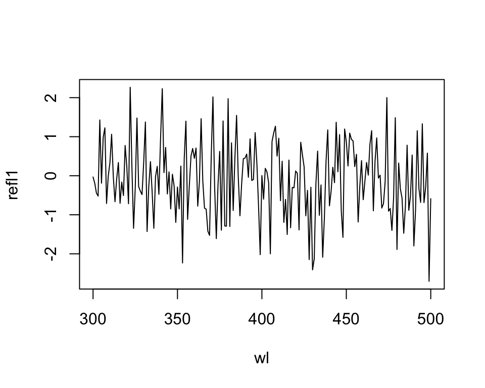
We want to stress that it is important to check the actual wavelengths contained in the data before setting this argument (as.rspec() will warn you when wavelengths in the data are not present in the range specified with lim), otherwise as.rspec() will assume that wavelengths exist when in fact they may not. For example, if we set lim = c(300, 1000) and plot the results, the reflectance values between 700 and 1000 nm are set to be equal since there is no information at these wavelengths in the original dataset:
wavelengths found in column 3Warning: Interpolating beyond the range of actual data.
Check 'lim' and `exceed.range` arguments to confirm this is the desired behaviour.The spectral data contain 743 negative value(s),
which may produce unexpected results if used in models.
Consider using procspec() to correct them.plot(fakedat.new2[, 2] ~ fakedat.new2[, 1], type = "l")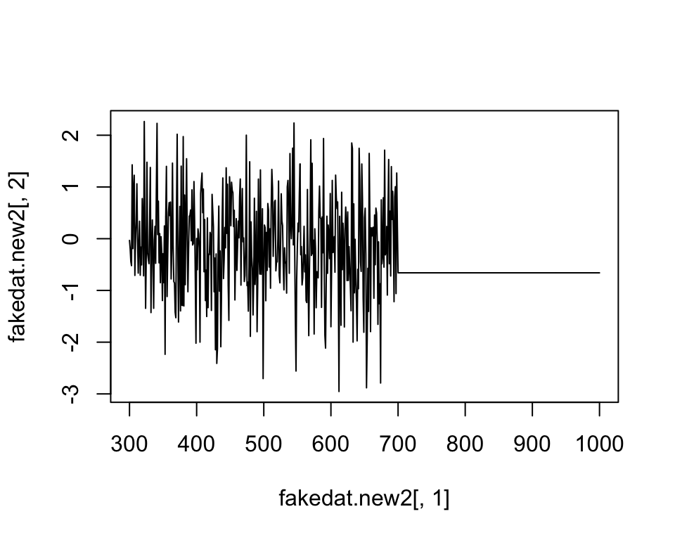
1.1.3 Simulating spectra
In version 2.9.0 of pavo we also introduced the function simulate_spec(), which allows for the simple and flexible simulation of naturalistic spectra. The arguments allows us to specify sigmoidal (s-shaped) and/or Gaussian (bell-shaped) features, which can be combined as we like to simulate a suite of biological processes.
For example, we might simulate a spectrum with a single Gaussian peak at 500 nm, which might be seen as in various structural colours, or even the absorbance of visual pigments.
spec_gauss <- simulate_spec(wl_peak = 400)
plot(spec_gauss)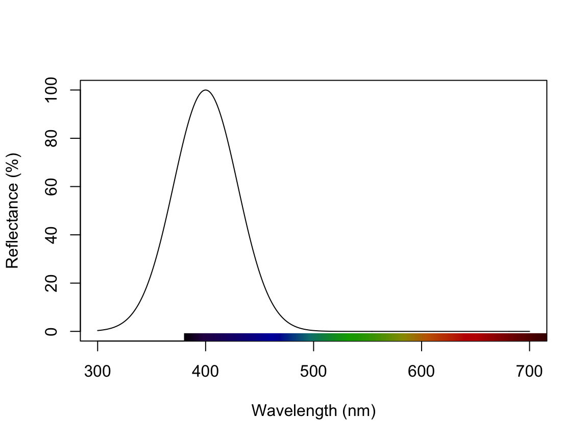
Or a more complex example could include a single sigmoidal peak, with multiple Gaussian peaks, in the one spectrum.
spec_multi <- simulate_spec(wl_inflect = 575, wl_peak = c(340, 430), width_gauss = c(20, 60))
plot(spec_multi)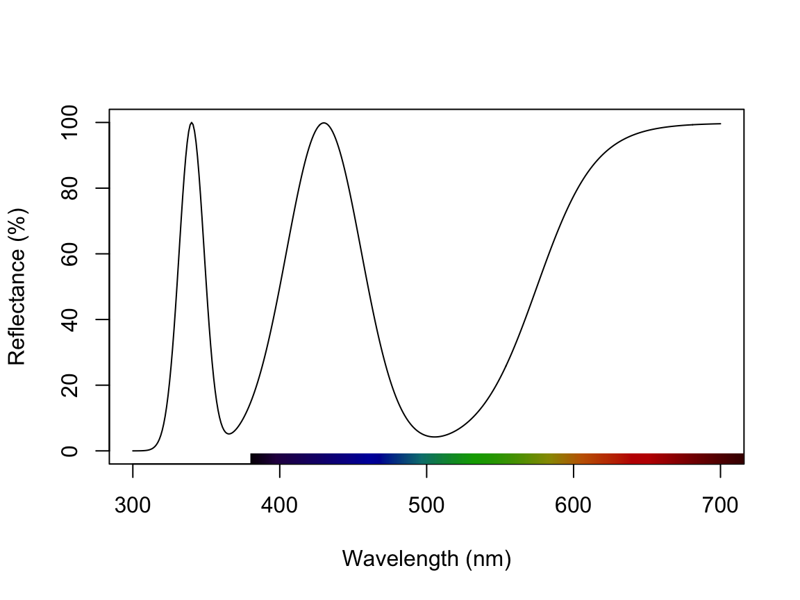
Finally, we might simulate a set of Gaussian reflectance curves with peaks varying between 400-600 nm. Such an approach could be useful for various simulation-based studies which seek, for example, to explore optimal receptor sets, or the constraints on colour signal production and perception.
1.1.4 Subsetting and Merging Spectral Data
Once an rspec object has been created, either by importing raw spectral data, converting a dataset with the as.rspec() function, or simulation, you can subset the spectra based on their names using a modified version of R’s built-in subset function. For example, the following code illustrates how to create an rspec object containing only tanagers:
wl tanager.0001 tanager.0002 tanager.0003 tanager.0004
1 300 10.0618 10.6744 10.1499 13.7473
2 301 11.1472 10.8054 9.8003 14.3102
3 302 10.7819 10.6134 9.5607 14.4463
4 303 11.0210 11.2037 10.4107 15.5533
5 304 10.2177 11.2120 9.9452 14.3841
6 305 11.5664 11.6135 10.8659 15.6445The subset function here is using partial matching to find all spectra with the string “tanager” in their name. To fully benefit from this flexible subsetting functionality, it is important that you follow a consistent file naming scheme. For example, tanager.14423.belly.001.ttt would indicate the species (tanager), individual ID (14423), body patch (belly) and measurement number (001). Additionally, we suggest that labels used should have the same number of characters, which simplifies character string manipulation and subsetting based on partial matching.
If you prefer not to use partial matching, subset will also work if you provide a logical condition, similar to the default subset behaviour in R. For example:
[1] TRUENote that subset will also work with visual model (class vismodel) and colspace (class colspace) objects, as described below.
Another useful function is merge. Let’s say that you have subsetted spectra for tanagers and parakeets, and you would like to re-combine them for an analysis. The following lines of code show how to do this:
Note that this re-combined file (specs.new) has only a single wl column with the merged spectra as columns. Keep in mind that the order of objects in merge will determine the order of columns in the final merged object (i.e. tanagers will be before parakeets).
1.2 Processing Spectral Data
1.2.1 Averaging Spectra
As previously described, our data (contained in the specs object) consists of multiple individuals, and each was measured three times, as is common to avoid measurement bias. A good way to visualize the repeatability of our measurements is to plot the spectra of each individual separately. The function explorespec() provides an easy way of doing so. You may specify the number of spectra to be plotted in the same panel using the argument specreps, and the function will adjust the number of panels per page accordingly. We will exemplify this function using only the 12 cardinal individuals measured:
# 36 spectra plus the first (wl) column
explorespec(specs[, 1:37], by = 3, lwd = 2)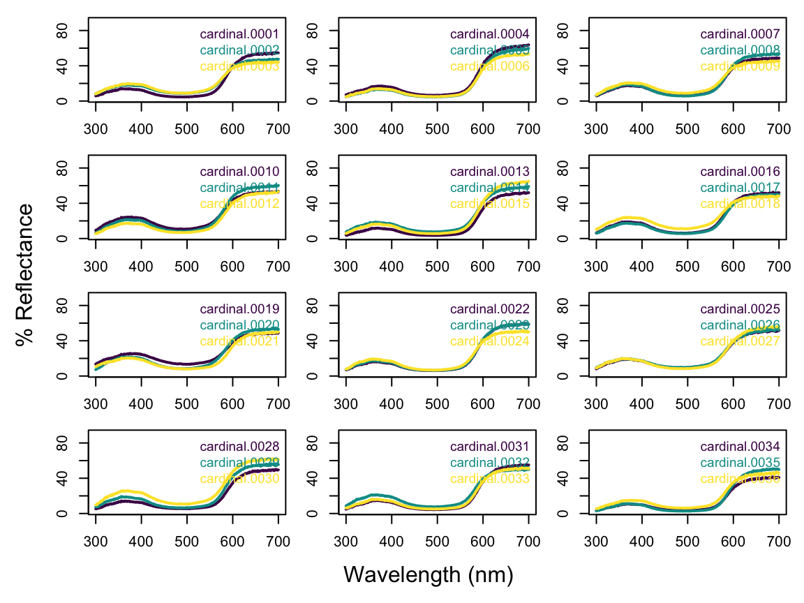
explorespec, showing the three measurements for each individual cardinal in separate panelsSo our first step would be to take the average of each of these three measurements to obtain average individual spectra to be used in further analyses. This is easily accomplished using the aggspec() function. The by argument can be either a number (specifying how many specs should be averaged for each new sample) or a vector specifying the identities of the spectra to be combined (see below):
mspecs <- aggspec(specs, by = 3, FUN = mean)
mspecs[1:5, 1:4] wl cardinal cardinal.1 cardinal.2
1 300 7.292933 5.676700 6.387233
2 301 7.759200 5.806700 6.698200
3 302 7.959333 5.858467 6.910500
4 303 7.947133 6.130267 7.357567
5 304 8.218200 6.127933 7.195267# Data now has 71 spectra,
# one for each individual,
# and the 'wl' column
dim(mspecs) [1] 401 72Now we’ll use the aggspec() function again, but this time to take the average spectrum for each species. However, each species has a different number of samples, so we can’t use the by argument as before. Instead we will use regular expressions to create a species name vector by removing the numbers that identify individual spectra:
spp
cardinal jacana oriole parakeet robin tanager
12 9 9 13 10 18 Instead, we are going to use the spp vector we created to tell the aggspec() function how to average the spectra in mspecs:
wl cardinal jacana oriole parakeet robin tanager
1 300 7.05 7.33 3.89 7.63 3.98 9.02
2 301 7.25 7.35 3.91 7.75 3.91 9.53
3 302 7.44 7.45 4.13 7.89 4.19 9.41
4 303 7.82 8.09 4.39 8.49 4.51 10.20
5 304 7.84 7.71 4.18 8.66 4.07 9.681.2.2 Normalizing and Smoothing Spectra
Data obtained from spectrometers often requires further processing before analysis and/or publication. For example, electrical noise can produce unwanted “spikes” in reflectance curves. The pavo function procspec() can handle a variety of processing techniques. For example, the reflectance curve from the parakeet is noisy in the short (300-400 nm) and long (650-700 nm) wavelength ranges (see Figure below, black line). To eliminate this noise, we will use local regression smoothing implemented by the loess.smooth() function in R, wrapped in the opt="smooth" argument of procspec().
But first, let’s use the plotsmooth() function to determine a suitable smoothing parameter (span). This function allows you to set a minimum and maximum smoothing parameter to try and plots the resulting curves against the unsmoothed (raw) data in a convenient multipanel figure.
plotsmooth(sppspec,
minsmooth = 0.05,
maxsmooth = 0.5,
curves = 4,
ask = FALSE)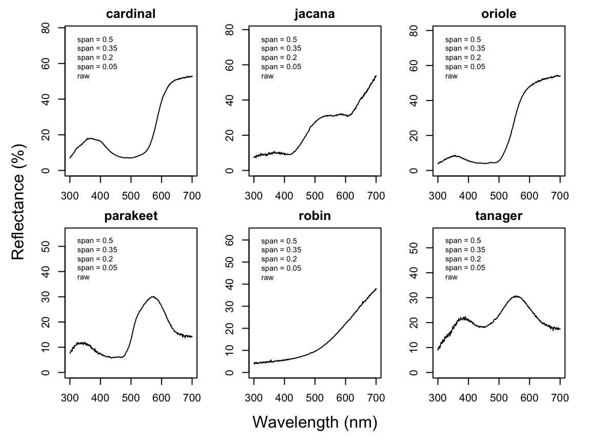
From the resulting plot, we can see that span = 0.2 is the minimum amount of smoothing to remove spectral noise while preserving the original spectral shape. Based on this value, we will now use the opt argument in procspec() to smooth data for further plotting and analysis.
spec.sm <- procspec(sppspec, opt = "smooth", span = 0.2)processing options applied:
smoothing spectra with a span of 0.2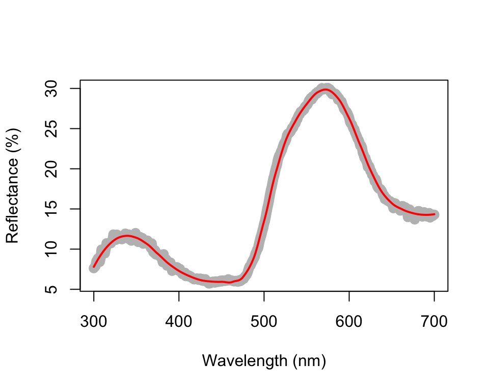
We can also try different normalisations. Options include subtracting the minimum reflectance of a spectrum at all wavelengths (effectively making the minimum reflectance equal to zero, opt = "min", left panel, below) and making the reflectance at all wavelength proportional to the maximum reflectance (i.e. setting maximum reflectance to 1; opt = "max", centre panel, below). Note that the user can specify multiple processing options that will be applied sequentially to the spectral data by procspec() (right panel, below).
# Run some different normalisations
specs.max <- procspec(sppspec, opt = "max")processing options applied:
Scaling spectra to a maximum value of 1specs.min <- procspec(sppspec, opt = "min")processing options applied:
Scaling spectra to a minimum value of zeroprocessing options applied:
Scaling spectra to a minimum value of zero
Scaling spectra to a maximum value of 1# Plot results
plot(specs.min[, 5] ~ c(300:700),
xlab = "",
ylab = "",
type = "l")
abline(h = 0, lty = 2)
plot(specs.max[, 5] ~ c(300:700),
ylim = c(0, 1),
xlab = "",
ylab = "",
type = "l")
abline(h = c(0, 1), lty = 2)
plot(specs.str[, 5] ~ c(300:700),
type = "l",
xlab = "",
ylab = "")
abline(h = c(0, 1), lty = 2)
mtext("Wavelength (nm)", side = 1, outer = TRUE, line = 1)
mtext("Normalised reflectance (%)", side = 2, outer = TRUE, line = 1)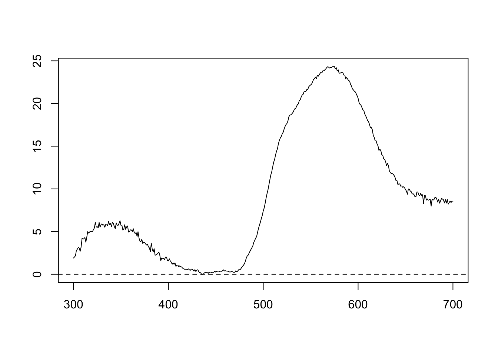
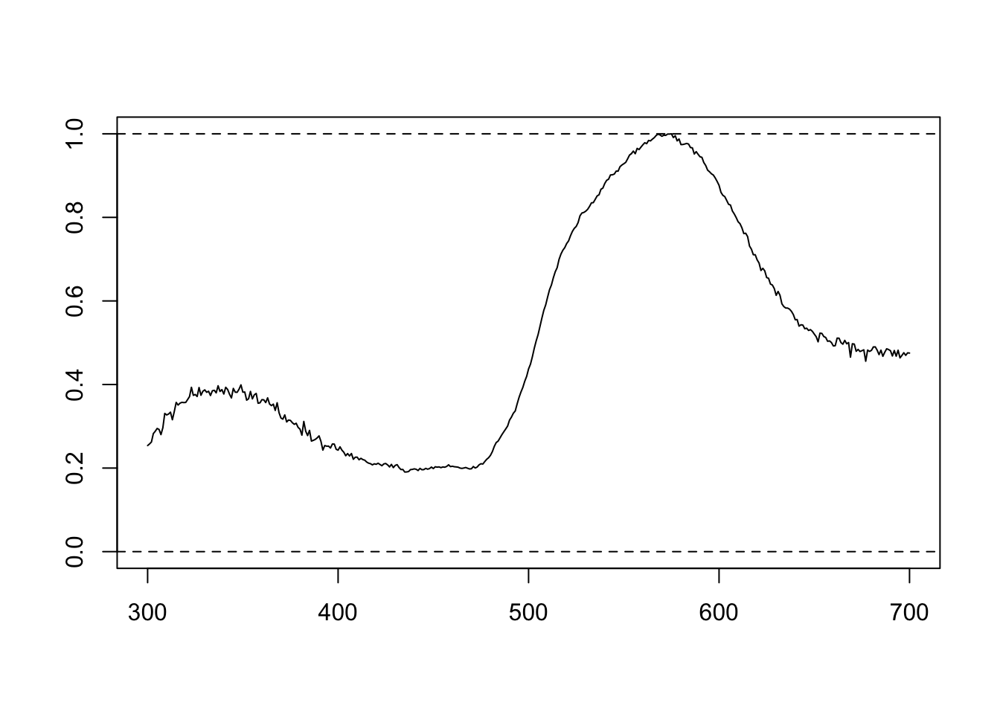
1.2.3 Binning and PCA Analysis of Spectral Shape
Another intended usage of procspec() is preparation of spectral data for dimensionality reduction (for example, using Principal Component Analysis, or PCA). Following Cuthill et al. (1999), we can use opt = 'center' to centre spectra to have a mean reflectance of zero (thus removing brightness as a dominant variable in the PCA) and then bin the spectra into user-defined bins (using the opt = 'bin' argument) to obtain a dataframe suitable for the PCA.
processing options applied:
Centering spectra to a mean of zero
binned spectra to 21-nm intervalshead(spec.bin) wl cardinal jacana oriole parakeet robin tanager
1 300 -12.991747 -15.98282 -17.78389 -5.187601 -10.043001 -9.61852071
2 321 -8.754302 -15.22013 -15.67409 -3.497942 -9.751455 -6.74685034
3 342 -5.490538 -14.60414 -14.58129 -3.695973 -9.454188 -2.77517997
4 363 -4.639077 -14.17163 -15.03655 -5.552378 -9.222658 -0.14415405
5 384 -5.563199 -14.48320 -16.68218 -7.387742 -8.880768 -0.03173553
6 405 -8.639736 -14.92472 -17.86635 -8.574752 -8.326391 -1.44428182summary(pca1)Importance of components:
PC1 PC2 PC3 PC4 PC5 PC6
Standard deviation 3.6016 1.9885 1.5791 0.6678 0.36656 3.78e-16
Proportion of Variance 0.6486 0.1977 0.1247 0.0223 0.00672 0.00e+00
Cumulative Proportion 0.6486 0.8463 0.9710 0.9933 1.00000 1.00e+00As can be seen by the summary, PC1 explains approximately 64% of the variation in spectral shape and describes the ratio of short to long wavelengths reflected. The flexibility of R and pavo’s plotting capabilities allows you to sort spectra by another variable (e.g., PC1 loading) and then plot in a stacked format using the plot function.
# Generate colours from spectra
colr <- spec2rgb(sppspec)
wls <- as.numeric(colnames(spec.bin))
# Rank specs by PC1
sel <- rank(pca1$x[, 1])
sel <- match(names(sort(sel)), names(sppspec))
# Plot results
plot(pca1$rotation[, 1] ~ wls, type = "l", ylab = "PC1 loading")
abline(h = 0, lty = 2)
plot(sppspec,
select = sel,
labels.stack = names(sppspec)[sel],
type = "s",
col = colr)
mtext("Wavelength (nm)", side = 1, outer = TRUE, line = 1)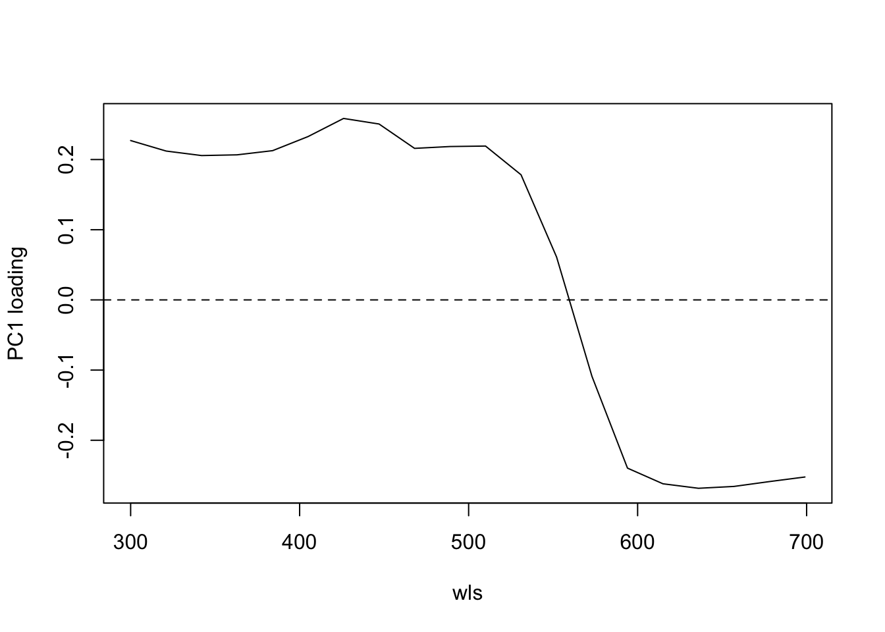
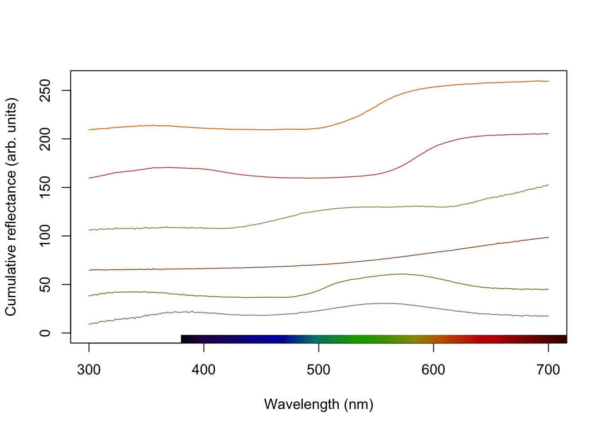
1.2.4 Dealing With Negative Values in Spectra
Negative values in spectra are unwanted, as they are uninterpretable (how can there be less than zero light reflected by a surface?) and can affect estimates of colour variables. Nonetheless, certain spectrometer manufacturers allow negative values to be saved. To handle negative values, the procspec() function has an argument called fixneg. The two options available are (1) adding the absolute value of the most negative value to the whole spectrum with addmin, and (2) changing all negative values to zero with zero.
wavelengths found in column 1The spectral data contain 188 negative value(s),
which may produce unexpected results if used in models.
Consider using procspec() to correct them.# Apply two different processing options
testspecs.fix1 <- procspec(testspecs, fixneg = "addmin")processing options applied:
Negative value correction: added min to all reflectancetestspecs.fix2 <- procspec(testspecs, fixneg = "zero")processing options applied:
Negative value correction: converted negative values to zero# Plot it
plot(testspecs, select = 2, ylim = c(-10, 30))
abline(h = 0, lty = 3)
plot(testspecs.fix1, select = 2, ylim = c(-10, 30))
abline(h = 0, lty = 3)
plot(testspecs.fix2, select = 2, ylim = c(-10, 30))
abline(h = 0, lty = 3)
mtext("Wavelength (nm)", side = 1, outer = TRUE, line = 1)
mtext("Reflectance (%)", side = 2, outer = TRUE, line = 1)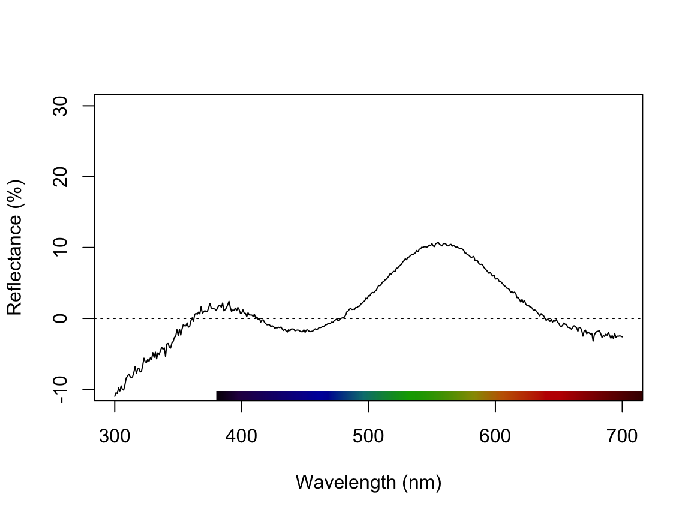
fixneg = addmin (center) and fixneg = zero (right).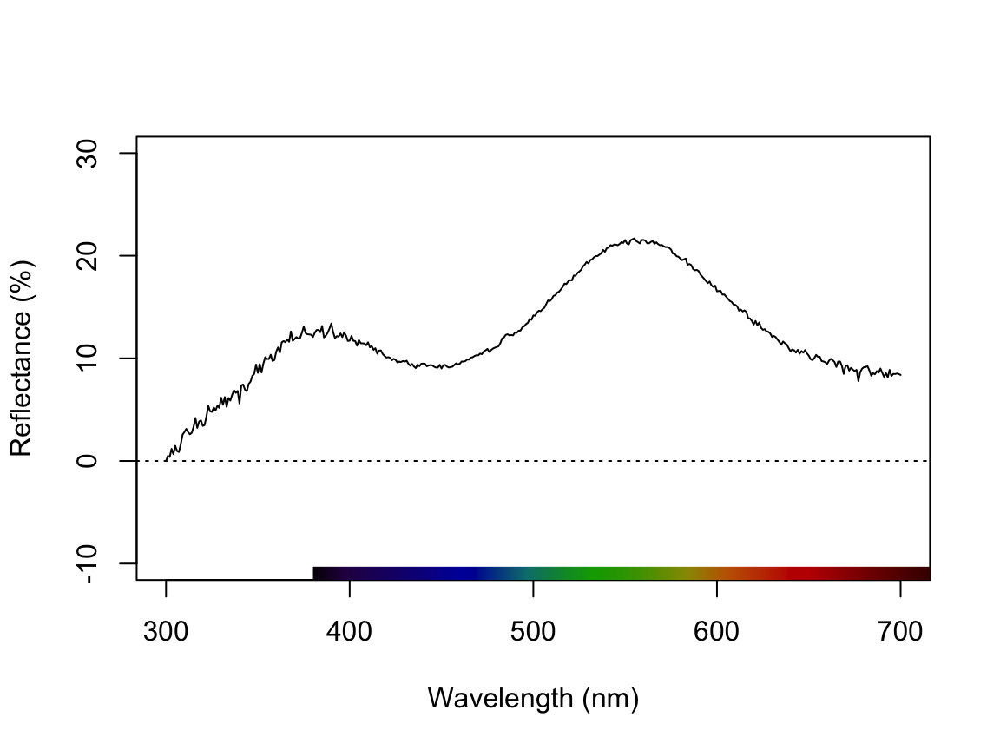
fixneg = addmin (center) and fixneg = zero (right).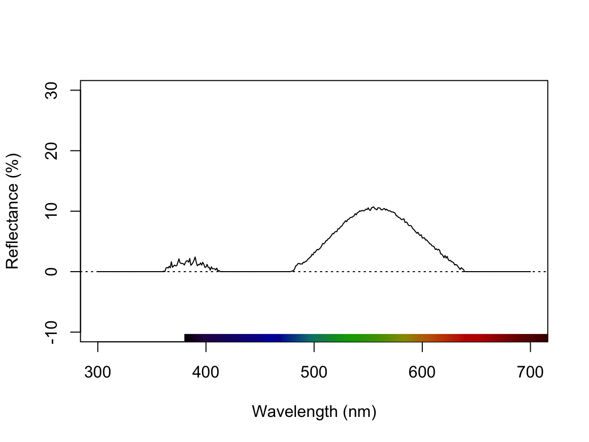
fixneg = addmin (center) and fixneg = zero (right).These manipultions may have different effects on the final spectra, which the user should keep in mind and use according to the final goal of the analysis. For example, by adding the minimum reflectance to all other wavelength, the shape of the curve is preserved, but the maximum reflectance is much higher. On the other hand, substituting negative values with zero preserves absolute reflectance values, but may cause the spectral shape to be lost. The “best” transformation will depend on the severity of the problem of negative values and the goal of the analysis (e.g. will reflectance intensity be used? What is more important, to preserve reflectance values or the total shape of the curve?). Which correction to use would also depend on the source of the negative values. If they are thought to originate from improper calibration of the spectrophotometer, fixneg = addmin would be appropriate. However, if they are thought to originate from electric noise, fixneg = zero would be more appropriate.
1.3 Visualizing Spectral Data
pavo offers three main plotting functions. The main one is plot, which combines several different options in a flexible framework for most commonly used purposes. The explorespec() function aims at providing initial exploratory analysis, as demonstrated in Section 1. Finally, aggplot() provides a simple framework for publication-quality plots of aggregated spectral data.
1.3.1 The plot Function Options
Since pavo uses the class rspec to identify spectral data, the function plot.rspec() can be called simply by calling plot(data). If the object is not of class rspec the multivariate visualisation methods will not work as expected, so it might be useful to check the data using is.rspec() and convert with as.rspec() if necessary.
We have implemented three methods of visualizing spectral data using plot:
- Overlay: all spectra plotted with same x- and y-axis
- Stack: spectra plotted with same x-axis but arranged vertically along y-axis
- Heatmap: false colour map to illustrate three dimensional data
These options are in addition to the exploratory plotting offered by explorespec(), as seen in the figures in section 1. To showcase the capabilities of plot.rspec(), we will use the teal dataset included in pavo. This dataset consists of reflectance spectra from the iridescent wing patch of a green-winged teal (Anas carolinensis). Reflectance measurements were taken between 300 and 700 nm at different incident angles, ranging from 15° to 70° (in 5° increments) (Eliason and Shawkey 2012).
1.3.1.1 The overlay Option
We can start out by visualizing these spectra with the overlay option in plot. Another neat option pavo offers is to convert reflectance spectra to their approximate perceived colour, by using the function spec2rgb(). This can make for some very interesting plots and even exploratory data analysis, as shown above.
1.3.1.2 The stack Option
Another option is the stack plot (again, with human vision approximations of the colour produced by the spectra using spec2rgb()).
processing options applied:
Scaling spectra to a minimum value of zero
Scaling spectra to a maximum value of 1
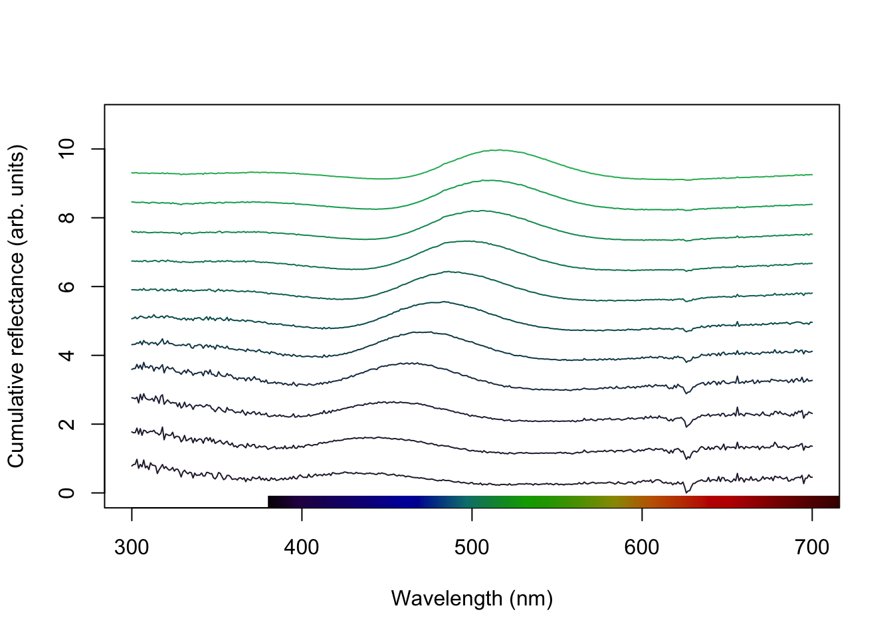
Note that in the above figure, the y axis to the right includes the index of each spectrum. This makes it easier to identify and subset specific spectra or groups of spectra using the select argument in plot.rspec(). Note also that the first index is actually 2, preserving the sequence in the original dataset (since the first column is wavelength). Though this may seem confusing at first (“why is my first spec number 2?”) this preserves subsetting hierarchy: using plot(teal, select = 2) will show the same spectra that would be selected if you use teal[ ,2].
1.3.1.3 The heatmap Option
Since this dataset is three-dimensional (containing wavelengths, reflectance values and incident angles) we can also use the heatmap function. First, it will be necessary to define a vector for the incident angles each spectrum was measured at:
angles <- seq(15, 70, by = 5)Next, we will smooth the data with procspec() and plot as a false colour map (heatmap):
processing options applied:
smoothing spectra with a span of 0.25# Plot it as a heatmap
plot(teal.sm,
type = "h", varying = angles,
ylab = expression(paste("Incident angle (", degree, ")")),
las = 1, useRaster = TRUE
)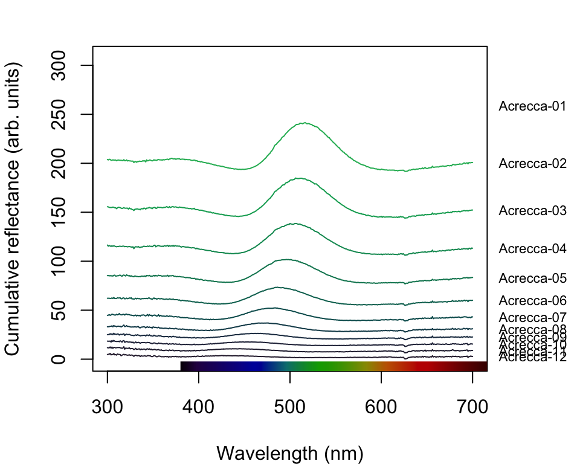
These plots can be very useful to observe changes over time, for example, or any other type of continuous variation.
1.3.2 The aggplot() Function
aggplot() has a very similar interface to aggspec(), allowing for quick plotting of aggregated spectra combined by a factor, such as species, sex, experimental treatment, and so on. Its main output is a plot with lines of group mean spectra outlined by a shaded area indicating some measure of variability, such as the standard deviation of the group. Note that functions that aren’t already implemented in R must be passed like they would be to functions such as apply (e.g., function(x) sd(x)/sqrt(length(x)) in the example below).
# Plot using median and standard deviation, default colours
aggplot(mspecs, spp,
FUN.center = median,
ylim = c(0, 70),
alpha = 0.3, legend = TRUE)
# Plot using mean and standard error, in greyscale
aggplot(mspecs, spp,
ylim = c(0, 70),
FUN.error = function(x) sd(x) / sqrt(length(x)),
lcol = 1, shadecol = "grey", alpha = 0.7)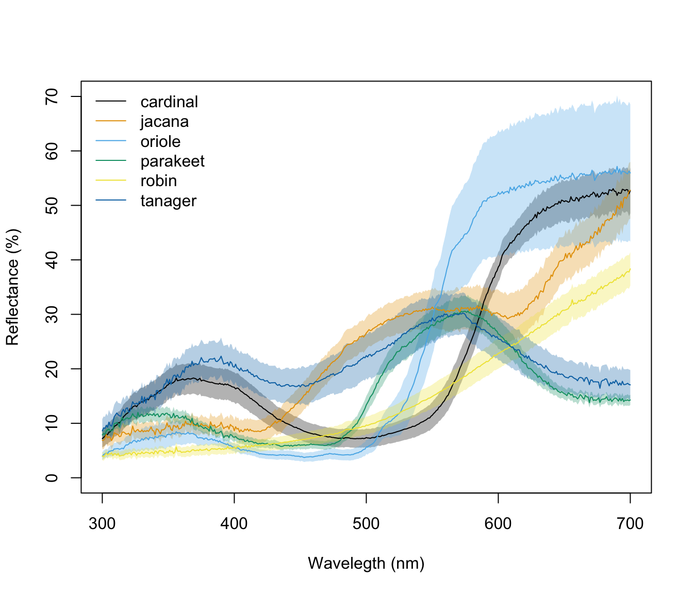
aggplot. Left: using median, standard deviation, and coloured lines. Right: using mean, standard error, and greyscale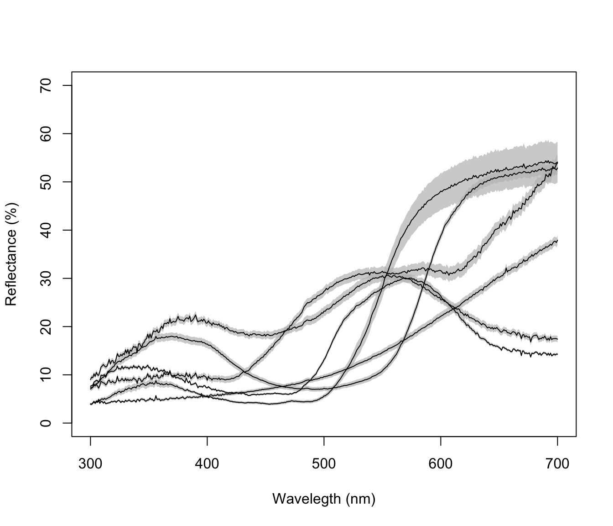
aggplot. Left: using median, standard deviation, and coloured lines. Right: using mean, standard error, and greyscale1.4 Organizing Spatial (image) Data
We first import our images with getimg(), which functions in a similar manner to getspec(). Since we are importing more than one image, we can simply point the function to the folder containing the images, and it will use parallel processing (where possible) to import any jpg, bmp, or png images in the folder. As with the raw spectra, these images are also available at the package repository [here][data-location], but are included in the package installation for convenience.
butterflies <- getimg(system.file("testdata/images/butterflies",
package = 'pavo'))2 files found; importing images.When pavo imports images, it created a multidimensional object of class rimg, which inherits from the array class. If more than one image is imported, then these rimg objects are stored as elements in a list. All image-based functions in pavo are capable of working with such rimg lists, which allows for a more convenient and tidy high-throughput workflow. Note that while pavo will allow you to load, manipulate, and analyse as many images as your computer’s memory allows, it will throw a message if the total size of images in memory is greater than ca. 200mb, as this will result in noticeably slowed performance (everything will still work, it will just be slow). This may be ameliorated by reducing the size of individual images, such as through procimg(), or by processing images in smaller batches. All rimg objects have a number of identifying attributes, drawn on by image-processing functions, which can be readily inspected.
is.rimg(butterflies)[1] TRUEstr(butterflies[[1]]) 'rimg' num [1:500, 1:340, 1:3] 1 1 1 1 1 1 1 1 1 1 ...
- attr(*, "state")= chr "raw"
- attr(*, "imgname")= chr "h_melpomene"
- attr(*, "px_scale")= logi NA
- attr(*, "raw_scale")= logi NA
- attr(*, "k")= logi NA
- attr(*, "outline")= logi NA
- attr(*, "colnames")= logi NA
- attr(*, "tag_loc")= logi NAstr(butterflies[[2]]) 'rimg' num [1:500, 1:398, 1:3] 1 1 1 1 1 1 1 1 1 1 ...
- attr(*, "state")= chr "raw"
- attr(*, "imgname")= chr "papilio"
- attr(*, "px_scale")= logi NA
- attr(*, "raw_scale")= logi NA
- attr(*, "k")= logi NA
- attr(*, "outline")= logi NA
- attr(*, "colnames")= logi NA
- attr(*, "tag_loc")= logi NAIf you already have images loaded into R, you can convert them to rimg objects using as.rimg(). The function will attempt to interpret a multidimensional array as an RGB image with values ranging between [0, 1], and imbue it with the custom attributes of an rimg. We can see this by creating a fake array, before converting it.
[1] TRUEstr(fake_rimg) 'rimg' num [1:12, 1:8, 1:3] 1 1 0 0 1 1 0 0 1 1 ...
- attr(*, "state")= chr "raw"
- attr(*, "imgname")= chr "img"
- attr(*, "px_scale")= logi NA
- attr(*, "raw_scale")= logi NA
- attr(*, "k")= logi NA
- attr(*, "outline")= logi NA
- attr(*, "colnames")= logi NA
- attr(*, "tag_loc")= logi NA1.5 Visualising Image Data
1.5.1 The plot and summary Functions
Thanks to the underlying class system of pavo, the generic functions plot and summary recognise and respond to image-data in an appropriate manner, as is the case with spectral data. A quick call to plot, for example, prints our images. Note that while we call an image individually below (for convenient printing in the vignette), we could simply feed the entire list of images to plot and it would automatically step through each image in the list upon user input.
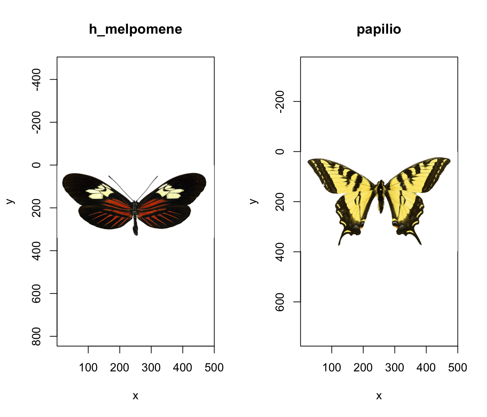
The summary function offers some summary information about images or lists of images as we might expect. If we specify plot = TRUE however, the function instead plots the image. When such images have been colour-classified this also plots the images’ colour palette alongside (see below). This is an extremely useful diagnostic tool when classifying images, as it allows us to see how well the classification algorithm has performed in clustering colour pattern elements into discrete colour categories. As with all plots, the function takes all standard plot arguments (see ?par), such as custom colours, which again can be diagnostically useful.
1.6 Processing Image Data
1.6.1 Overview
Images often require some post-capture processing, depending on the intended use, and pavo offers some useful options via procimg(). The functionality of procimg() is currently limited to only that which is closely relevant to the analyses currently implemented, as we assume any major processing and quality-checking (e.g. image rotation and colour correction) is undertaken by the user beforehand. However, should users with to keep their image processing within the R ecosystem, there now exist several excellent image-processing packages such as imager and magick, which pavo can seamlessly work with. Indeed, the functions rimg2cimg() and rimg2magick() convert images from pavo preferred structure to that used by imager (with the reverse simply achieved via as.rimg()), which simplifies the transitions between these packages.
1.6.2 Filtering images to model the visual acuity of animals
The resolving power of animals is in large part defined by their visual acuity, and this reality has has important consequences for questions of signal evolution and visual ecology. This process can can now be accounted for (in part) via procimg() which implements the AcuityView algorithm of Caves and Johnson (2018). Note that for users familiar with the algorithm this is the 2.0 implementation, which now accepts any rectangular images (not only those which are square with dimensions a power of 2).
To run the procedure, procimg() requires three arguments: obj_dist, the real-world distance between the viewer and the focal object in the image, obj_width, the real-world width of the entire image, and eye_res, the resolution of the viewer in degrees. Any units of measurement are suitable for obj_dist and obj_width, but they must match. Here we’ll run our butterfly images through the process assuming a conspecific viewer at a distance of 60 cm, an image width of 10 cm, and visual acuity 0.2 CPD.
# Model the appearance of our butterflies given the reduced
# visual acuity of another animal viewer as per the
# AcuityView 2.0 algorithm (Caves & Johnsen 2018). Here
# our butterfly is 60 cm away, the image width is 10 cm,
# and the spatial resolution of the viewer is 0.2-degrees.
butterflies_acuity <- procimg(butterflies,
obj_dist = 60,
obj_width = 10,
eye_res = 0.2)
# See the results
par(mfrow = c(1, 2))
plot(butterflies_acuity[[1]])
plot(butterflies_acuity[[2]])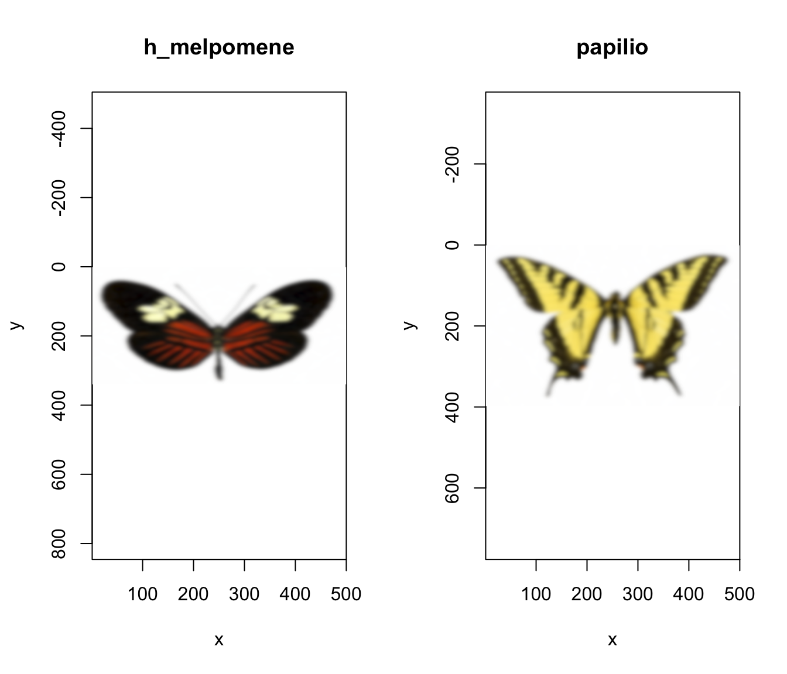
Note there are some important considerations and caveats to the method. The core publication of Caves and Johnsen (2018) provides rich discussion of these points (and should of course also be cited whenever used). In brief, however, it should be remembered that:
- While AcuityView allows us to gain insight into what spatial information can and cannot be detected by a viewer, the converted image is not what the animal actually sees. No experimental or theoretical treatment can provide much insight into the perceptual world of another animal.
- The converted image does not account for edge enhancement and other processing by the retina and brain that that can sharpen (but not add detail) to an image. The converted image is also static, which does not allow one to assess how movement may reveal the presence of an otherwise indiscernible object.
- The AcuityView algorithm makes several assumptions about the modulation transfer function (MTF). First, it assumes that the MTF is constant over the region of the eye that views the scene, and that the scene of interest is viewed by the portion of the retina with the highest acuity (e.g. fovea). It also assumes that the MTF is circularly symmetrical, which is not always true. Some eyes have non-circular PSFs which can lead to non-circular MTFs (e.g. Baldwin Fergus et al., 2015). Finally, it assumes that the MTF is wavelength-independent, whereas an MTF which is strongly affected by light scattering may exhibit some dependence on wavelength as a result. Note that greater flexibility in specifying the MTF will be implemented in the future, but feel free to get in touch if this is required in the shorter term.
1.6.3 Setting Scales and Defining Objects
The other central purpose of procimg() is centres on rotating and resizing images, setting a real-world image scale, and/or distinguishing the focal object from its background. Rotating an image simply requires inputting an angle, in degrees, by which the image is rotated about its centre, while resizing requires a scaling factor by which the size of image(s) are to be decreased or increased. Setting scales and distinguishing backgrounds, in contrast, are both interactive procedures, meaning that we are presented with the focal image and must select points on it using the mouse (either a line, when setting a scale, or a polygon when identifying the focus). If setting a scale, we specify a scale in our preferred units via scaledist, and then click the endpoints of the scale within the image (which could be a ‘formal’ scale, or simply the length of a wing or another known reference object). This information, as usual, is attached to the image as an attribute.
# Interactively specify the real-world scale of the image.
# Here 100 mm.
butterflies <- procimg(butterflies, scaledist = 100)Distinguishing a focal object from its background is important in cases where we are analysing a broader visual scene, particularly when the background is highly heterogeneous, such as an animal in nature, and cannot be classified into a homogeneous block and identified more simply (see below). To define the object and background we specify outline = TRUE, which will result in being asked to click around the outline of the focal object in each image, which is then converted to a polygon — the xy coordinates of which are saved as an attribute. It is often useful to slightly smooth the resulting polygon, which can be done with Chaikin’s corner-cutting algorithm by specifying a number of refinements. Chaikin’s algorithm works by iteratively replacing every point by two new points 1/4 of the way to the next. The argument iterations specifies the number of corner cutting iterations to apply, and the default value of 1 offers a subtle smoothing effect.
# Interactively specify a smoothed polygon
# around the focal objects
butterflies <- procimg(butterflies,
outline = TRUE,
iterations = 1)All of these options can be simultaneously specified in a single call to procimg(), and the pavo 2.0 publication offers a useful example of such processing, since the more involved features are difficult to illustrate here due to their interactive nature.